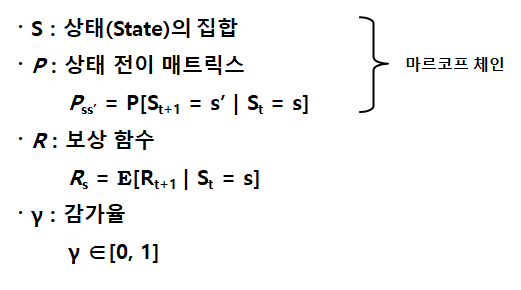
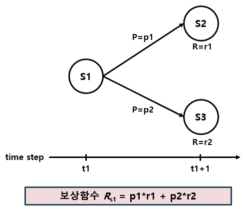
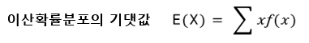
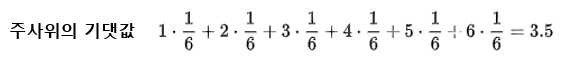
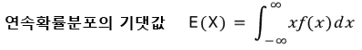
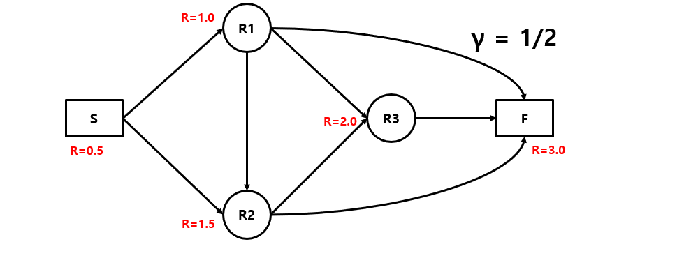
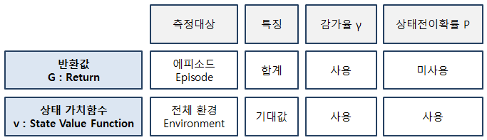
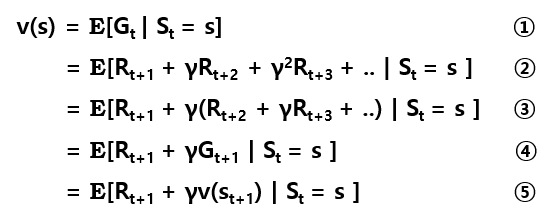
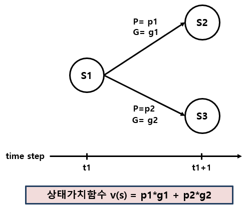
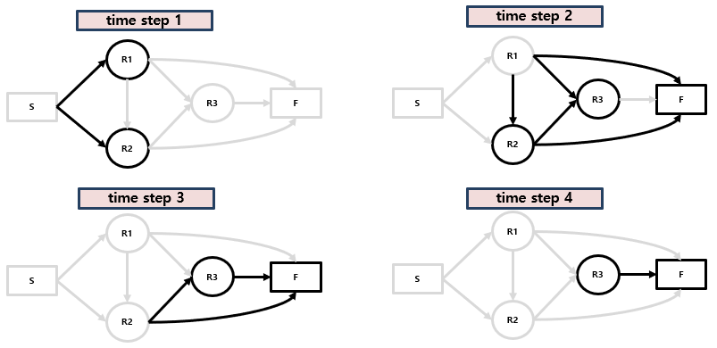

[강화학습 기초 2-3] 마르코프 보상 과정: 상태의 가치를 계산한다
보상 함수, 감가율, 반환값, 상태 가치 함수, 벨만 방정식을 예시 계산과 함께 정리합니다.
강화학습 기초 시리즈 · 12편 중 4번째 글
연재 목차 보기
대표가 쓴 『개발자답게 코드로 익히는 강화학습』(프리렉, 2025)의 내용을 블로그에 맞게 정리해 연재합니다.
마르코프 보상 과정이란
마르코프 보상 과정(MRP: Markov Reward Process)은 마르코프 연쇄에 보상(Reward)과 감가율(γ, 감마)을 더한 개념입니다. 마르코프 연쇄가 상태 집합(S)과 상태 전이 행렬(P)로 이루어졌다면, MRP는 여기에 보상 함수(R)와 감가율(γ)이 붙습니다.
마르코프 연쇄만으로는 상태가 바뀔 확률만 알 수 있고, 그 변화가 얼마나 가치 있는지는 알 수 없습니다. MRP를 쓰면 상태 변화의 가치를 계산할 수 있습니다.
이제 수식이 조금 등장합니다. 당황하지 말고 하나씩 보면 생각보다 어렵지 않습니다.

- S (상태 집합): 환경이 가질 수 있는 상태들입니다. MRP에서는 상태의 개수가 정해져 있어야 합니다. 주가를 예측한다면 주가에 영향을 주는 여러 변수가, 백화점 매출을 예측한다면 고객 · 매출 · 재무 정보가 환경에 해당합니다.
- P (상태 전이 행렬): 시간 t에 상태가 s일 때, t+1에 상태가 s′가 될 조건부 확률을 모은 행렬입니다.
- R (보상 함수): 시간 t에 상태가 s일 때, 다음 시간 t+1에 받을 보상의 기댓값입니다.
- γ (감가율): 0과 1 사이의 값으로, 미래의 보상을 현재 가치로 얼마나 깎을지 정합니다.
보상 함수

상태 s1에서 다음에 갈 수 있는 상태가 두 개이고, 각각의 확률이 p1, p2, 받는 보상이 r1, r2라면 보상 함수의 값은 p1×r1 + p2×r2입니다.
보상 함수로 구하는 것은 그 순간에 받는 보상뿐입니다(이 부분은 뒤에 나오는 반환값을 보면 더 분명해집니다). 상태 s의 보상은 시간이 한 타임스텝 지나 t+1이 되고, 상태가 s′로 옮겨갈 때 계산됩니다.
여기서 잠깐 · 확률의 기댓값
기댓값은 각 사건이 일어났을 때의 값에 그 사건이 일어날 확률을 곱해서 모두 더한 것입니다. 확률을 고려한 평균이라고 생각하면 됩니다.

이산확률분포에서 f(x)는 x가 일어날 확률입니다. 값과 확률을 곱해서 더합니다.

주사위는 1부터 6까지 나올 확률이 모두 1/6입니다. 값과 확률을 곱해 더하면 3.5로, 주사위 눈의 평균과 같습니다.

연속확률분포에서 f(x)는 확률밀도함수입니다. 값을 하나하나 셀 수 없으므로 더하기 대신 적분(그래프 아래 넓이)을 씁니다.
감가율
감가율(γ)은 시간이 흐름에 따라 가치를 얼마나 할인할지 정하는 비율이고, 0과 1 사이의 값을 가집니다.
중고차 값을 예로 들어 보겠습니다. 1년에 감가율 0.8을 쓴다면, 2년 된 차는 원래 가격에 0.8×0.8 = 0.64를, 3년 된 차는 0.8×0.8×0.8 = 0.512를 곱해 가격을 매깁니다.
감가율은 아직 오지 않은 미래의 가치를 계산할 때도 씁니다. 오늘 받는 천만 원과 1년 뒤에 받는 천만 원은 같은 가치가 아닙니다. 금리와 물가를 고려해 감가율을 0.9로 잡으면, 1년 뒤 받을 천만 원의 현재 가치는 9백만 원입니다.
MRP의 목적은 가치를 계산하는 것입니다. 한 순간의 보상이 아니라 에피소드 전체, 또는 환경 전체의 가치를 계산하고, 그 값을 현재 가치로 바꿔야 합니다. 에피소드는 여러 타임스텝에 걸쳐 진행되므로, 몇 타임스텝 뒤의 보상을 지금 가치로 바꾸는 데 감가율이 필요합니다.
- 감가율이 0이면 미래의 보상을 전혀 고려하지 않습니다.
- 감가율이 1이면 현재 보상과 미래 보상을 똑같이 평가합니다.
반환값
반환값(G: Return)은 타임스텝 t부터 받는 보상을 감가율로 할인해서 모두 더한 값입니다.
반환값은 주로 에피소드 하나를 단위로 계산합니다. 에피소드가 얼마나 효율적인지, 얼마나 가치 있는지를 반환값으로 평가하고, 반환값이 커지도록 환경을 설계하는 것이 MRP의 목적 중 하나입니다.
반환값 식에는 상태 전이 확률이 없습니다. 반환값은 이미 선택된 길(에피소드) 하나의 보상을 계산하는 것이므로 확률을 쓸 필요가 없습니다.

앞 편의 길 찾기 네트워크에 상태별 보상을 붙이고, 감가율을 1/2로 정했습니다. 3 타임스텝 만에 도착하는 에피소드 세 개의 반환값을 구해 보면 다음과 같습니다. 타임스텝이 하나 지날 때마다 보상에 1/2를 한 번 더 곱합니다.
| 에피소드 | 계산 | 반환값 |
|---|---|---|
| ① S → R1 → R3 → F | 0.5 + ½×1.0 + ¼×2.0 + ⅛×3.0 | 1.875 |
| ② S → R1 → R2 → F | 0.5 + ½×1.0 + ¼×1.5 + ⅛×3.0 | 1.750 |
| ③ S → R2 → R3 → F | 0.5 + ½×1.5 + ¼×2.0 + ⅛×3.0 | 2.125 |
반환값이 가장 큰 ③번 에피소드가 가장 효율적인 길입니다.
상태 가치 함수
반환값이 에피소드 하나의 가치를 잰다면, 상태 가치 함수(v: State Value Function)는 환경 전체에서 어떤 상태의 가치를 잽니다. 그래서 상태 가치 함수에는 상태 전이 확률이 함께 들어갑니다.


①은 상태 가치 함수가 반환값의 기댓값이라는 뜻입니다. ②는 반환값 식을 그대로 넣은 것이고, ③은 다음 타임스텝부터의 보상을 감가율로 묶은 것입니다. ④는 묶은 부분을 다음 타임스텝의 반환값 Gt+1로 바꾸었고, ⑤는 반환값 대신 다음 상태의 상태 가치 함수 v(St+1)를 넣었습니다.

예를 들어 상태 s1에서 다음 상태로 갈 수 있는 길이 두 개라면, 각 길의 반환값(g1, g2)에 그 길로 갈 확률(p1, p2)을 곱해 더하면 됩니다. v(s) = p1×g1 + p2×g2입니다.
벨만 방정식
강화학습에서 프로그램으로 가치를 계산할 때 많이 쓰는 것이 벨만 방정식(Bellman Equation)입니다. 미국 수학자 리처드 벨만(Richard Bellman)의 이름을 땄습니다. 벨만 방정식은 기댓값을 확률과 값을 곱해 더하는 꼴(Σ)로 풀어 쓰고, 현재 상태의 가치를 다음 상태의 가치로 나타냅니다.
= Rs + γ Σs′∈S Pss′ v(s′)
첫 줄은 앞에서 본 상태 가치 함수입니다. 둘째 줄에서 첫 항 Rs는 앞에서 본 보상 함수, 즉 상태 s에서 다음에 받을 보상의 기댓값입니다. 둘째 항은 다음 상태 s′의 가치에 그 상태로 갈 확률 Pss′를 곱해 모두 더한 것입니다. 이것이 MRP의 벨만 방정식입니다.

벨만 방정식을 쓰는 이유는 프로그래밍으로 문제를 풀기 위해서입니다. 예시처럼 작은 네트워크라면 타임스텝 순서대로 반환값을 구해 상태 가치를 계산할 수 있습니다. 다만 상태가 많아지면 이렇게 하나씩 계산하기 어렵고, 이 문제를 푸는 방법이 앞으로 배울 강화학습 알고리즘들입니다.
MRP는 강화학습으로 가는 중간 단계이므로, 지금은 상태 가치 함수가 무엇을 뜻하고 벨만 방정식으로 어떻게 표현되는지 이해하는 것으로 충분합니다.
정리
- MRP = 상태 집합(S) + 상태 전이 행렬(P) + 보상 함수(R) + 감가율(γ)
- 반환값(G)은 에피소드 하나의 할인된 보상 합계이고, 확률을 쓰지 않습니다.
- 상태 가치 함수(v)는 반환값의 기댓값으로, 환경 전체에서 상태의 가치를 나타냅니다.
- 벨만 방정식은 현재 상태의 가치를 다음 상태의 가치로 나타내, 프로그램으로 계산할 수 있게 해 줍니다.